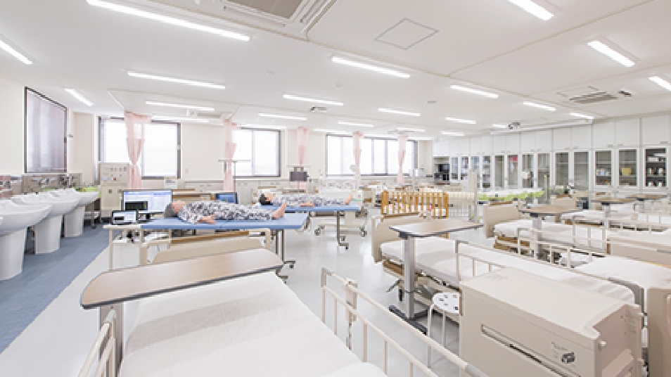
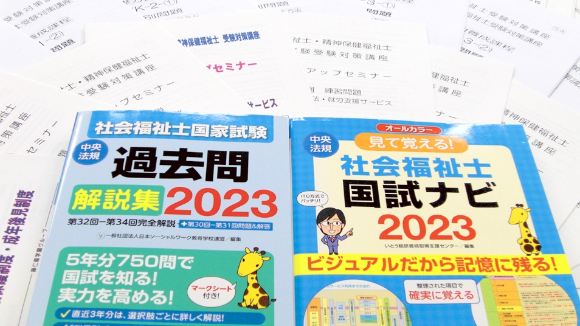
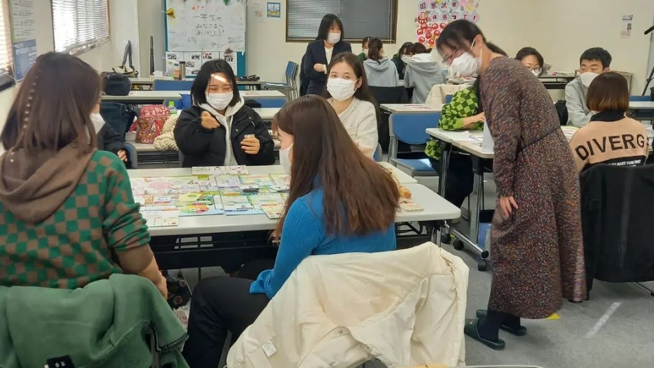

介護福祉士も、看護師も、社会福祉士も。高崎駅から通えるキャンパスで、医療福祉のプロへの最短ルートを。社会人・子育て中の方の学び直しも歓迎です。
高校からの進学も、社会人の学び直しも、働きながらの通信も。目指す資格と生活に合わせて選べます。
現場で頼られる介護福祉士へ。実習と国家試験対策を2年に凝縮。学費サポート制度も充実。

本物の病棟さながらの実習室で、確かな看護技術を。地域の医療機関と連携した実習体制。

働きながら国家資格を目指せる通信課程。首都圏9キャンパスでスクーリング可能。
群馬と首都圏の医療福祉現場に、多くの卒業生を送り続けてきました。※開校年・実績数値は御校と相談のうえ正確に記載します

授業や実習室の見学、入試・学費の個別相談、通信課程の説明会まで。保護者の方との参加も歓迎です。スマホから1分で予約できます。
開催日を見る・予約する※予約導線は御校の既存フォーム（オープンキャンパス・個別相談）に接続します
授業のようす、在校生の1日、卒業生の今。進路を考える高校生と保護者に届く形で、学校のリアルを発信し続けます。※運用体制もあわせてご提案します
| 名称 | 藤仁館医療福祉専門学校（2026年4月、高崎福祉医療カレッジより校名変更） |
|---|---|
| 運営 | 学校法人 藤仁館学園 |
| 高崎本校 | 〒370-0045 群馬県高崎市東町28-1 TEL 027-386-2323 |
| 学科 | 介護福祉学科（2年制・40名）／看護師学科（3年制・40名）／通信課程（社会福祉士科・精神保健福祉士科・看護師科） |
| キャンパス | 高崎・高松町・太田・熊谷・大宮・南浦和・池袋・北千住・横浜 |
※設立年・沿革・指定/認可情報は御校と相談のうえ正確に記載します。